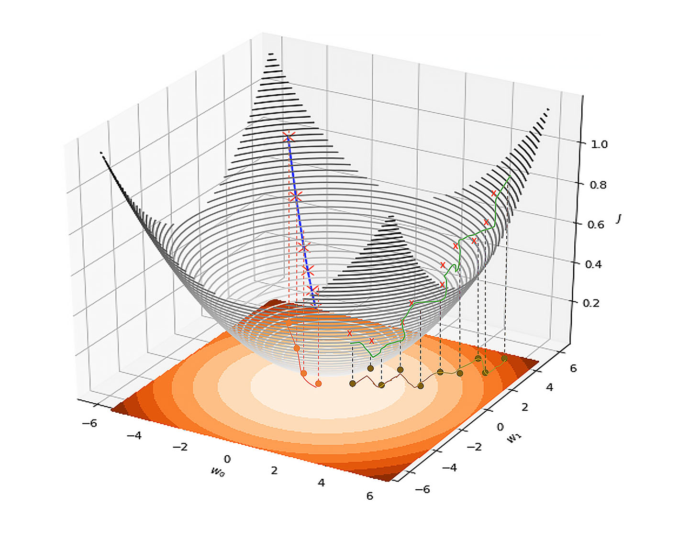
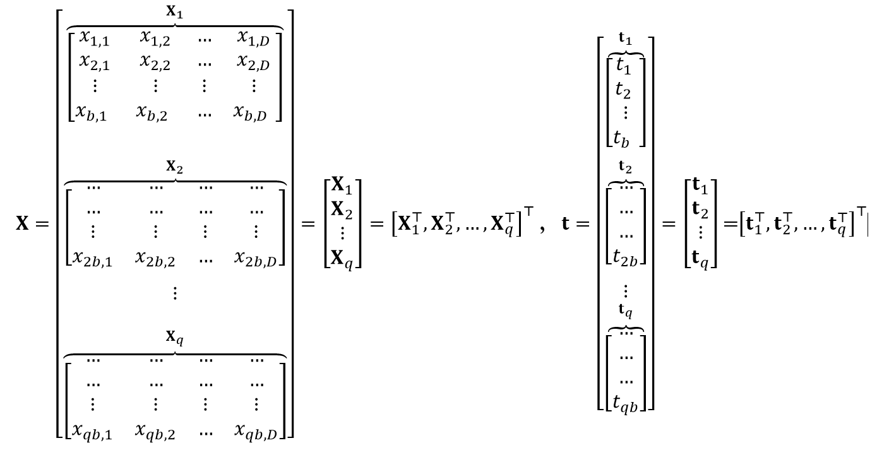

Approximate solutions: gradient descent
For linear models we saw that we can analytically find a solution via the normal formula by setting the gradient to 0 and solving with respect to \(\mathbf{W}\). Such solutions are either not available when we deal with non-linear optimisation or is not desirable due to efficiency requirements. Even if an analytical close form solution is available, the complexity of finding the least squares is \(O\left(D^{2} \times N\right)\) which is quite expensive when \(N\) is reasonably large.
In such cases, it is desirable to find an approximate solution for the problem (i.e. an approximation for \(\mathbf{w}^{*}\)) to come as close as possible to the minimum without necessarily finding the exact solution. Algorithms that try to achieve this are called approximation algorithms, you will study several of these in the Algorithms Module, including greedy, local search and dynamic programming algorithms. In our case, we will utilise an important and pervasive approximation algorithm that is utilised throughout machine learning. It is not necessary the best approximation algorithm but it is the simplest to understand and to implement.
This optimisation algorithm is called the gradient descent or steepest descent. This technique aims at iteratively finding the minimum of a function (the loss function \(\overline{J^{2}}\) in our case). The algorithm starts from any point on the surface of the loss function (i.e. by taking a random initial value for \(w\)) and then it takes small steps in the direction of the minimum of the function by changing the weights gradually in each step. The direction of the point \(w^*\) that minimise \(\overline{J^{2}}\) from any point \(\mathbf{w}^{(\tau)}\) is always opposite to the gradient of the function at this point \(-\nabla J^{2}\left(\mathbf{w}^{(\tau)}\right)\). This is because the gradient of a function always points in a direction opposite to the minimum.
Please watch the following video on gradient descent.
Download the following powerpoint slides used in the video for a summary of what we cover in this unit.
Here we are talking about a minimum, often complex loss functions have several minima so we will come back to this idea later when we move to the non-linear models towards the end of the unit. We are taking small steps towards the minimum because taking large steps lead to overshooting the minimum or oscillating around it. The size of the step (denoted as \(η\)) is called the learning rate because it represents how fast a model can learn the solution of the problem. Gradient descent is a numerical optimisation technique so it is an iterative technique that keep working though iterations until it reaches a good enough approximate solution. Reaching a minimum is called convergence (a well known concept in calculus).
Let us start by the basic gradient descent update which takes the following form:
Where \(\mathbf{w}^{(\tau)}\) represents the weight vector at iteration τ and this is not exponentiation. \(η_τ\) is a learning step that can be varied between iterations to make the algorithms responsive to changes in the loss function terrain. The basic form of the GD is given below (scroll to the right within the box to view all information).
Algorithm 2: Approximation Algorithm: Gradient Descent
Input:
Input set: \(\mathbf{X}=\left\{\mathbf{x}_{1}, \ldots \mathbf{x}_{N}\right\}\) # Training set
Labels set: \(\mathbf{t}=\left\{t_{1}, \ldots t_{N}\right\}\) # Training set
Output: \(\mathbf{w}\) an approximation for optimum weights \(\mathbf{w}^{*}\)
\(\mathbf{G D}(\mathbf{X}, \mathbf{t})\):
Initialise \(\mathbf{w}\)
For \(\tau=1: {\tau}\text { max }\)
\(\mathbf{w}=\mathbf{w}-\eta_{\tau} \nabla \overline{J^{2}}(\mathbf{w}, \mathbf{X}, \mathbf{t})\) # obtain the gradient of the loss for current \(\mathbf{w}\) on the entire training set
Return the final solution \(\mathbf{w}\).
There are some optimisation techniques that give us how to vary the learning rate \(η_τ\) but we have not shown this here for simplicity. Also note that both \(η_τ\) and \(τmax\) should be inputs to the algorithm but we omit this to promote simplicity.
In the next section we will see how to apply the gradient descent algorithm on the linear regression model.
Batch Gradient Descent for Linear Regression Models
We will take the gradient of the cost function directly without using its vectorised form but later we develop a vectorised version. We have seen already in a previous section that the gradient of the linear regression loss function takes the form:
\(J_{n}(\mathbf{w})=\left(t_{n}-\mathbf{w}^{\top} \mathbf{x}_{n}\right)\) and \(\nabla J_{n}(\mathbf{w})=-\mathbf{x}_{n}\)
hence
This is an important formula that we will refer back to often. To get a taste of what this gradient entails, we show below what is involved in it:
Therefore, the gradient descent algorithm for linear regression model, which acts on the entire training set, takes the form:
The number of iterations that we need to take in order to reach the minimum depends on \(η\). The smaller \(η\) is the more iterations we need to take, however we need to strike a balance here because if \(η\) is too big then the algorithm might either oscillate or completely diverge (go away from the minimum). \(η\) is almost always less than 1, a reasonable value of \(η=0.01\) for linear regression. For other more complex models \(η\) may need to take much smaller values. Each sweep through the entire dataset is called an epoch and this is a hyper parameter that we need to set, often between 10 and 100.
Scroll to the right within the box to see all information.
Algorithm 3: Approximation Algorithm: Batch Gradient Descent (GD) for Linear Regression Model, without vectorisation.
Input:
Input set: \(\mathbf{X}=\left\{\mathbf{x}_{1}, \ldots \mathbf{x}_{N}\right\}\) each \(\mathbf{x}_{n}\) is a vector of size \(D\) # Training set
Labels set: \(\mathbf{t}=\left\{t_{1}, \ldots t_{N}\right\}\) each \(t_{n}\) is a scalar # Training set
\(η\): The learning rate
\(epcs\): Max number of epochs
Output: \(\mathbf{w}\) an approximation for optimum weights \(\mathbf{w}^*\); a vector of size \(D+1\)
GD_LRegress \((X,t,η,epcs)\):
Initialise \(\mathbf{w}\)
For \(epoch = 1: epcs\)
\(\mathbf{w}^{\prime}=\mathbf{0}_{D+1}\)
For \(n=1:N\)
\(\mathbf{x}_{n}=\left[1, \mathbf{x}_{n}^{\top}\right]^{\top}\) # add a dummy attribute for each \(x_n\)
\(\mathbf{w}^{\prime}=\mathbf{w}^{\prime}+\eta \mathbf{x}_{n}\left(t_{n}-\mathbf{w}^{\top} \mathbf{x}_{n}\right)\) # accumulated the changes without committing them
\(\mathbf{w}=\mathbf{w}+\frac{1}{N} \mathbf{w}^{\prime}\) # now commit the changes
Return the final solution \(\mathbf{w}\).
Note how we accumulate the changes inside a temporary vector \(\mathbf{w}^{\prime}\) (this is just a vector of size \(D+1\)) in an epoch and we commit at the end of the epoch. This is why it is called a batch gradient descent algorithm; we are waiting till the end of iterating through full batch of the dataset and then we change \(\mathbf{w}\), i.e. we do not change \(\mathbf{w}\) during the epoch.
This form of batch gradient descent does not take advantage of vectorisation and is slow. For large dataset vectorising the implementation is impractical. However, later on when we talk about mini-batch stochastic gradient descent we will see a way to make a good compromise that will allow us to utilise vectorisation.
For further reading, see Yoshua Bengio's paper on Practical Recommendations for Gradient-Based Training of Deep Architectures.
Sequential Learning: Stochastic Gradient Descent for Linear Regression Models
Please watch the following video on stochastic and mini-batch gradient descent for linear regression.
Download the following powerpoint slides used in the video for a summary of what we cover in this unit.
Batch learning algorithm such as LS Regression or Batch Stochastic Gradient Descent take into account the entirety (the whole batch) of the dataset at once. No intermediate learning occurs. Another way to minimise the loss function is to gradually change the weights towards minimising the loss function instead of going all the way according to the sum of the errors. This is called sequential learning. There are several advantages for this approach. The most obvious advantage is that it allows for a stream of data to be fed into a system and the system can learn live as the data arrives from the stream. The main advantage is that learning can occur immediately for any fed sample and we do not need to wait to see the entirety of the dataset to learn a model.
Here we need to understand the concept of a learning rate or learning steps denoted as \(η\). This hyper parameter specifies how much of the individual step error we want to take into account. In simple linear models this will not make a difference and in fact if assumed that the loss function is convex i.e. it has a global optimum then we can go all the way and adopt the entirety of each step error \(\left(\mathbf{w}^{\top} \mathbf{x}_{n}-t_{n}\right)\) offline without changing the weights in each step. However, when the concavity of the loss function (existence of global optimum) is not guaranteed and when the loss function has several local optima some of which are really slight valleys (or when it is infested with local optima) then adopting the full error \(t_{n}-\boldsymbol{y}\left(\mathbf{x}_{n}\right)\) is not a good idea. This is because it will force the model to fall into the nearest local minimum and consequent updates are spent on moving out or into local minima. Bearing in mind that the data is noisy anyway, we would want to utilise the learning step for our benefit to reduce the effect of the noise and help avoid the problem of overfitting. Essentially, we replace the loss function \(J^{2}\) by \(J_n^2\), so after a data point becomes available, we update according to:
Where \(τ\) represents the iteration (or the time step) and η is the learning rate parameter which should be carefully chosen so that it does not lead to divergence or oscillation of the algorithms. This is because effectively we are accounting for only a very small part of the gradient and we need to leave room for gradients of other data points to take effect in later iterations. Note that we added a (-) to go against the gradient direction which will make the changes go in the direction that will minimise the error. A reasonable choice of \(η\) is to make it proportional to the number of expected data points.
Stochastic Gradient Descent (SGD) suffers from several issues, mainly its high variance and its short-sighted look into the loss function terrain by considering just one or few data points. The gradient as a vector, has two essential properties that will direct our search for the minimum of the loss. The first is its direction and the second its magnitude. In general, variants of SGD optimisation use the gradient to specify the direction of changes in the weight vector, they vary in the way they estimate how much of the magnitude of the gradient to be considered (the amount of change). Other optimisation techniques use different direction than that of the gradient altogether, ex. the conjugate gradient of the loss, these however lie outside the scope of our coverage. Vanilla SGD just uses the learning rate \(η\) to uniformly take a proportion of the gradient magnitude not all of it. But this makes it difficult to calibrate the learning rate because it has to fit all the different terrains of the loss function, so we normally end up reducing \(η\) and taking lots of steps to converge to the minimum (of course there local and global minimum, but let us not differentiate for a moment).
There are a lot of variations for the stochastic gradient descent. Mainly they are concerned with tailored learning rate that is responsive to the geometrical aspects of the loss function.
-
For example we can employ the idea of momentum which changes the learning rate according to a linear combination of the gradient at the current step with the previous update: called Momentum.
-
We can also employ the idea of averaging the weights from all past steps which do not play around with the learning rate, it replaces it by averaging of the weights themselves: called Averaging.
-
We can adapt the learning rate for each individual weight. One way to do that is by keeping a running average for each weight and then we divide the learning rate of each individual weight by the weight running average: called RMSProp.
-
we can also make the learning rate change for each parameter according to how often the parameter is updated. This is particularly applicable for when we have many zeros in our inputs for several attributes quite often- the technical term is sparsity: this approach is called Adagrad.
-
Another idea is to keep a running average of each individual weight but involve both the gradient and the square of the gradient (second moment) of the weight as well as the idea of sparsity in Adagrad: this approach is called adaptive moment-Adam optimisation and is very popular in deep learning. Standard optimisation libraries allow you to choose what type of optimisation you want to use without having to implement it from scratch.
For further reading, see Sebastian Ruder's paper on An overview of gradient descent optimization algorithms.
We will refer to all of these strategies by using a normalisation vector \(\overline{\boldsymbol{N}}\) that can represent any of the above strategies. To cover the per-weight learning rate adaptation methods, such as the Adagrad and Adam, we need component-wise multiplication \((\) denoted as \(\circ)\). We can write \(\frac{1}{\overline{\boldsymbol{N}}} \circ \mathbf{X}_{n}\) to express that we are adjusting the weights components differently, this is a crude way of describing these optimisations but promote simplicity.
For linear regression we can set \(η\) to relatively high value such as 0.3 to take into account a good chunk of the errors since we know that the loss function is convex. The loss function is convex since we are taking the squares of weights with no activation function (we will talk more about activation function later in numerical classification). Still, we might want to use a reduced learning rate to cancel some of the noise of the data. Recall that any data will always have some noise in it and reducing the learning rate helps in reducing the risk of model overfitting and helps in reducing the effect of the noise. This is especially relevant when we talk about data streaming where we do not want to take into account all the error of the current input so as not undo completely some previous learning. Also, this brings us to the idea of input normalisation which should be used if possible, for input coming from data streams.
The idea of a learning step is pervasive in machine learning and can be powerful in tackling some of the overfitting issues that arise when dealing with regression. For example, we can anneal (gradually reduce) the learning step in each step or every b steps in order to hinge towards a global optimum when the loss function is not convex.
Another important reason to use SG Regression is that it is often faster to converge in practice than LS when we deal with more complex techniques and is more efficient to implement when the size of the dataset or its dimensionality is intractable. This is only for extremely large dataset but something worth putting in mind for future reference.
We can also apply SGD regression on a static dataset, we get a similar result to the LS regression. However, you should bear in mind that there are quite subtle differences between the two algorithms (the LS Regression and SG Regression). Let us see first SGD Regression on a dataset below.
Algorithm 4: Sequential Learning: Stochastic Gradient Descent for Linear Regression Model.
Input:
Input set: \(\mathbf{X}=\left\{\mathbf{x}_{1}, \ldots \mathbf{x}_{N}\right\}\) each \(\mathbf{x}_{n}\) is a vector of size \(D\) # Training set
Labels set: \(\mathbf{t}=\left\{t_{1}, \ldots t_{N}\right\}\) each \(t_{n}\) is a scalar # Training set
\(η\): The learning rate
\(epcs\): Max number of epochs
Output: \(\mathbf{w}\) an approximation for optimum weights \(\mathbf{w}^*\); a vector of size \(D+1\)
SGD_LRegress1 \((X,t,η,epcs)\):
Initialise \(\mathbf{w}\)
For \(epoch = 1: epcs\)
For \(n=1:N\)
\(\mathbf{x}_{n}=\left[1, \mathbf{x}_{n}^{\top}\right]^{\top}\) # add a dummy attribute for each \(\mathbf{x}_{n}\)
\(\mathbf{w}=\mathbf{w}+\eta \mathbf{x}_{n}\left(t_{n}-\mathbf{w}^{\top} \mathbf{x}_{n}\right)\) # commit the changes in every step
Return the final solution \(\mathbf{w}\).
Comparing Algorithm 3 and Algorithm 4, it becomes clear that in Algorithm 4 the weights are fixed during learning. In contrast Algorithm 3 accumulates all the changes of the weights and applies them all at once.
Mini-Batch Learning: Mini-Batch Stochastic Gradient Descent for Linear Regression Models
Mini-batch SGD algorithm can be used to reach a compromise between sequential and batch gradient methods. To achieve this: the weights changes can be accumulated on-the-sides not for the entire training set but for a limited number of steps b and be committed every b steps. On the extremes when we set \(b=N\) (wait until all the data finishes) we get an algorithm that is equivalent to the batch gradient descent, while when we set \(b=1\) we get the stochastic gradient descent. So \(b\) parametrise a middle ground approach for both cases. Below we show the algorithm.

Algorithm 5: Mini-Batch Stochastic Gradient Descent Updates for Linear Regression Model: Vanilla implementation that can be sped up- see next algorithm.
Input:
Input set: \(\mathbf{X}=\left\{\mathbf{x}_{1}, \ldots \mathbf{x}_{N}\right\}\) each \(\mathbf{x}_{n}\) is a vector of size \(D\) # Training set
Labels set: \(\mathbf{t}=\left\{t_{1}, \ldots t_{N}\right\}\) each \(t_{n}\) is a scalar # Training set
\(\eta:\) learning rate
\(b\): mini-batch size (specifies how frequently we want to update the weights \(\mathbf{w}\) ).
\(epcs\): Number of epochs
Output: \(\mathbf{w}\) an approximation for optimum weights \(\mathbf{w}^{*}\); a vector of size \(D+1\)
SGD_LRegress2\((X,t,b,η)\):
Initialise \(\mathbf{w}\) and set \(\mathbf{w}^{\prime}=0\)
For \(epoch = 1: epcs\)
For \(n=1:N\)
\(\mathbf{x}_{\boldsymbol{n}}=\left[\mathbf{1}, \mathbf{x}_{\boldsymbol{n}}^{\top}\right]^{\top}\) # add a dummy feature for each \(\mathbf{x}_{n}\)
\(\mathbf{w}^{\prime}=\mathbf{w}^{\prime}+\eta \mathbf{x}_{n}\left(t_{n}-\mathbf{w}^{\top} \mathbf{x}_{n}\right)\)
If \(n \% b==0\) # there is a better condition see the discussion below
\(\mathbf{w}=\mathbf{w}+\frac{1}{b} \mathbf{w}^{\prime}\)
\(\mathbf{w}^{\prime}=\mathbf{0}\)
Return the final solution \(w\)
The above algorithm utilises the modulus function \(n \% b\) which will give us the remainder of a division of the data point count \(n\) by \(b\) the batch size. When this function \(n \% b==0\) it means that \(b\) number of steps has elapsed. For example if \(N=90\) and we set b=10 then the weights \(\mathbf{w}\left(\operatorname{not} \mathbf{w}^{\prime}\right)\) will be updated every 10 steps and the updates will be executed 9 times. Note that we accumulate all the changes inside each 10 steps in \(\mathbf{w}^{\prime}\) and we commit them at the 10th step.
If we have \(N=94\) and we set \(b=10\) then the last 4 data points will be left if we just use the condition \(n \% b==0\). Therefore, we can adjust as follows:
If \(n \% b==0\) or \(n==N:\)
If \(n \% b \neq 0\) then \(b^{\prime}=n \% b\) # accommodate the last few points that do not fit a batch
Else \(b^{\prime}=b\)
\(\mathbf{w}=\mathbf{w}+\frac{1}{b} \mathbf{w}^{\prime}\)
\(\mathbf{w}^{\prime}=\mathbf{0}\)
The condition \(n \% b==0\) or \(n==N:\) or \(n==N\) is used to accommodate the last few points that cannot form a full batch. For the same reason we use \(b^{\prime}=n \% b\) instead of \(b\), which will yield \(b\) when \(n \% b==0\) and the remainder of the batch (4 in our example) otherwise when \(n==N\). we have not include this snippet to keep the algorithm simple.
Also, we use the weights \(\mathbf{w}\) in our output estimation \(\mathbf{w}^{\top} \mathbf{x}_{n}\) in the update rule \(\mathbf{w}^{\prime}=\mathbf{w}^{\prime}+\frac{1}{N} \eta\left(t_{n}-\mathbf{w}^{\top} \mathbf{x}_{n}\right) \mathbf{x}_{n}\) this is deliberate to guarantee stability. Mini-batch stochastic gradient descent reduce the variance caused by stochastic gradient descent and hence help stabilise the learning process.
Faster Mini-Batch SGD
The above algorithm is a vanilla algorithm of an SGD mini-batch that can be sped up. The algorithm slows down the process by processing the data points individually in each batch. There is a better approach, can you guess it, take a minute or two to think about it…Ok, it is vectorisation. The idea is as follows. We assume that the size of the batch is \(b\) and for simplicity that \(N\) is divisible by \(b\) the number of mini-batches as \(q=N / b\) then. Now we can adopt one of two strategies:
1. Define a partition of the training set \(\{\mathbf{X}, \mathbf{t}\}\) into a set of q mini-batches as follows:

Where \(\mathbf{X}_{\tau}\) is a matrix of size \(b \times D\) and \(\mathbf{t}_{\tau}\) is a vector of size \(b \times 1\). The subscript \(\tau\) represents the iteration where we have \(\tau=1: q (q\) is how many batches we want to deal with in our dataset \()\). We refer to both as a mini-batch of size \(b\).
So, now we sweep through all the mini-batches one after the other in each iteration to cover the whole training set, we call this an epoch. After each epoch we need to shuffle the dataset (or equivalently shuffle the membership assignment in the mini-batches which is what we always do in the implementation). Note that our weights estimation are expected to improve from one batch to another. Moreover, the weights error (cost function) is expected to improve from one epoch to another since we employ normally a learning rate<1. This strategy guarantees stability and efficiency at the same time. We will refer to this strategy as shuffling and partitioning strategy. Note that in this strategy each data point must appear once in one of the min-batches in each epoch.
2. The second strategy is just to draw a random mini-batch \(X_τ\) and \(t_τ\) of size b without partitioning which is even more efficient than the first strategy. This is drawing with replacement so the same data point can appear in multiple mini-batches inside the same epoch or may not appear at all in any mini-batch (but the same data point does not appear more than once in the same mini-batch). In this strategy we can decouple the number of mini-batches from the size of the training set, so \(q \geq N / b\) but it can still provide a general guide on the number of iterations (or mini-batches) the algorithm will go through. This strategy is faster in implementation, but it may lead to less stability than the first strategy, so it is more preferred in large scale learning. It all depends on selecting the trade-off that suits the application.
Both strategies are amenable for parallelisation, where we feed parts of the process to a different processor. Clearly, we can feed parts of a batch to different core processor but we cannot give different batches to different processor because the idea of the mini-batch is to update the weights directly after each batch and then use the new weights in the next batch. If we give away on this idea then we can distribute different batches on different processors and collect and aggregate the changes afterwards. Such a process will take us back to batch gradient descent. So, the implementation is similar to a min-batch but the effect is a batch gradient descent.
Both strategies are equivalent in the extremes: when b=1 or when \(b=N\). when \(b=1\) the SGD mini-batch algorithm turns into an SGD algorithm. When \(b=N\) the SGD mini-batch algorithm becomes a batch SGD algorithm which in turn approximates the least squares but without the overhead of matrix inversion.
Below we show the final mini-batch algorithm. We have left which strategy to adopt open in the algorithm and we have stated it as ‘Select a mini-batch \(X_τ,t_τ\) of size \(b\) from \(\mathbf{X}, \mathbf{t}: q \geq N / b\) (randomly or by shuffling and partitioning)’. So, this algorithm is actually two different algorithms depending on whether we choose to shuffle and partition the training set or just simply draw a random mini-batch (with replacement).
We normally decay the learning rate in order to prevent zigzagging around the minimum of the cost function when we start by a high learning rate or to fine tune our final weights.
Algorithm 6: Mini-Batch Stochastic Gradient Descent Updates for Linear Regression Model: with vectorisation.
Input:
Input set: design matrix \(\mathbf{X}=\left[\mathbf{x}_{1}^{\top}, \ldots, \mathbf{x}_{N}^{\top}\right]^{\top}\) each \(\mathbf{x}_{n}\) is a vector of size \(D \quad\) # Training set
Labels set: vector \(\mathbf{t}=\left[t_{1}, \ldots, t_{N}\right]^{\top}\) each \(t_{n}\) is a scalar # Training set
\(b\): The mini-batch size (specifies how frequently we want to update the weights \(\mathbf{w}\)).
\(η_0\): Initial learning rate
\(epcs\): Number of epochs
Output: \(\mathbf{w}\) an approximation for optimum weights \(\mathbf{w}^*\); a vector of size \(D+1\)
SGD_LRegress\(\left(\mathbf{X}, \mathbf{t}, b, \eta_{0}, e p c s\right)\):
Initialise \(\mathbf{w}\) and \(η=η_0\)
For \(epoch = 1:epcs\)
For iteration \(τ=1:q\) # \(q≥N/ b\)
Select a mini-batch \(\mathbf{X}_{\tau}, \mathbf{t}_{\tau}\) of size \(b\) from \(\mathbf{X}, \mathbf{t}\) # by sampling or by shuffling & partitioning
\(\mathbf{X}_{\tau}=\left[\mathbf{1}_{b}, \mathbf{X}_{\tau}\right]\) # add dummy feature to the mini-batch
\(\mathbf{w}=\mathbf{w}+\eta \frac{1}{b} \mathbf{X}_{\tau}^{\top}\left(\mathbf{t}_{\tau}-\mathbf{X}_{\tau} \mathbf{w}\right)\)
Decay \(η\) # if necessary: ex. \(η=0.9×η\)
Return the final solution \(\mathbf{w}\)
Stochastic gradient descent, especially the mini-batch version is an excellent tool to tackle large-scale learning and has received recently a considerable attention. Large scale learning is learning from a large dataset with a huge amount of instances available. In such a case, we cannot expect to train on the whole dataset because it is way beyond a single machine capabilities or even the capabilities of a medium cluster of machines. Stochastic gradient descent is an excellent tool because it allows us to simply tackle as much as we can digest in our available hardware. Of course there are several augmentations to the simple (vanilla) SGD in terms of cleverer selection of the data to be processed which goes beyond the basic form presented here. At the same time, parallelisation techniques can be employed to promote efficient parallelised implementation of amortised complexity of \(\mathcal{O}\left(\log _{r} N\right)\) where \(N\) is the dataset size or the size of the processed data that can be pulled from a data lake or a data centre and \(r\) is the number of parallel processors available to the algorithm.
For further reading, see Prateek et al's paper on Parallelizing Stochastic Gradient Descent for Least Squares Regression: Mini-batching, Averaging, and Model Misspecification.
It should be stressed here also that SGD is sensitive to feature scaling and it is recommended to rescale all features in the dataset, as we have discussed in unit 1. This is to avoid one feature overwhelming other features by its high values, especially when the attribute values do not vary that much. The simplest way is to rescale by dividing by the max value of the feature, or to subtract the minimum and divide by the difference between the minimum and the maximum of the feature. We get the min and max either by looking into the dataset or by understanding the domain of the feature. Consulting domain experts who work with the data is also useful to understand the nature of the dataset that we are tackling.
The above algorithm can be easily adapted when we are dealing with a data stream, all what we need to do is to accumulate \(\mathbf{X}_{\tau}\) as the data arrives until it is of the required size \(b\), and we can even vary the size \(b\) itself between different iterations. Note that, when \(b=N\) the algorithm goes back to a vectorised batch stochastic gradient descent which can be applied when the dataset size permits, the resultant weights are still an approximation even if it might be very close to the optimum solution \(\mathbf{w}^{*}\).
To summarise, we emphasise here, contrary to what one might expect, stochastic and mini-batch stochastic gradient descent converge faster than batch gradient descent in practice. This is due to several reasons. One reason is that both stochastic gradient algorithms infuse noise in the update which is quite useful to escape local minima. Another reason is that by nature stochastic algorithms are faster to execute and they execute several updates per clock time in comparison with batch gradient which keeps accumulating the gradients on the side until it sweeps through the whole training set. Assuming that the training set is finite but large, then the roughness of stochastic updates outperforms the more exactness of batch gradient. A third reason is that all gradient descents, even the batch one, do not point exactly to the global minimum instead they roughly point to a direction that will lead us to the minimum. Therefore, it does not make sense to spend a lot of computational power (as in the batch GD) to try to improve the gradient by considering more and more points until we consume the whole training set. Because even then the gradient is not necessarily pointing to the exact direction of the minimum, especially for complex loss function. Although linear regression loss function is quadratic and has a global minimum, nevertheless these issues can still be seen and you can examine them in the next exercise.